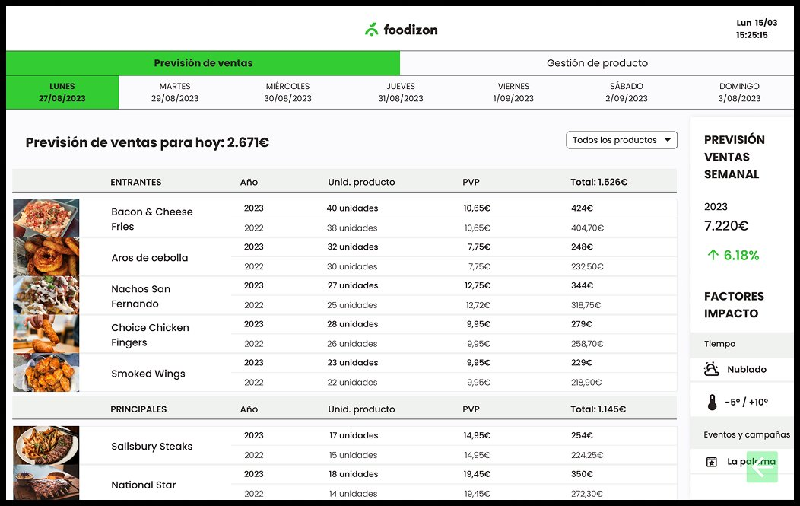
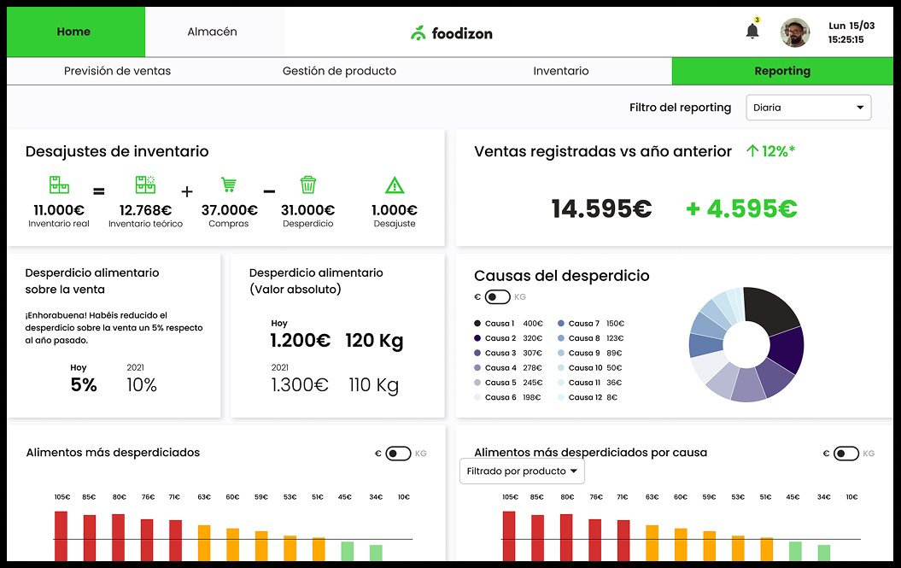
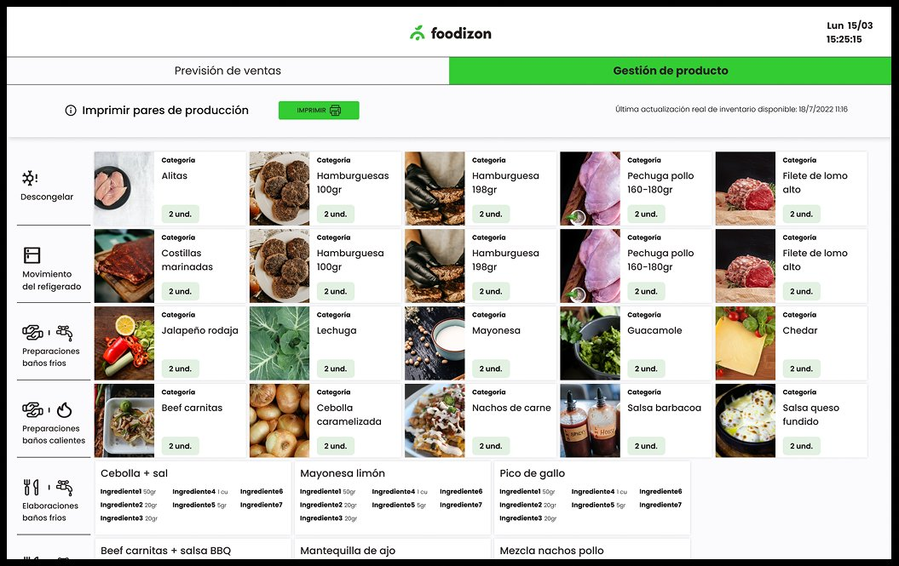

Background
Commercial kitchens lose significant revenue not because of spoilage, but because of poor planning — ordering too much, misjudging demand, or failing to track what's being wasted and why. Foodizon was built to solve this at the source.
The platform combines AI-powered demand forecasting with real-time inventory management and waste tracking — giving kitchen managers the data they need to make better decisions before waste happens, not after.
"Businesses can save up to 3% of their total turnover by eliminating waste caused by forecasting and planning errors — not by cutting costs, but by making better decisions."
Sales forecast
The sales forecast screen gives kitchen managers a clear view of expected revenue for each day of the week — broken down by dish, with year-on-year comparison and a weekly total. Impact factors like weather and local events are surfaced directly, so managers can adjust orders before they're placed.

Reporting & analytics
The reporting dashboard is the most strategically important screen in the platform. It shows real-time inventory discrepancies, sales vs previous year, food waste by cause, and the most wasted ingredients — turning complex operational data into a clear picture that kitchen managers can act on immediately.

Stock management
The stock management screen organises ingredients by preparation stage — defrost, fridge movement, cold prep, hot prep — with visual product cards showing quantities needed. Designed for use on a tablet mounted in the kitchen, prioritising speed and clarity over density.

UI decisions
Material UI was chosen as the primary component library to streamline handoff to the development team — providing a consistent design language, built-in accessibility, and a full set of ready-to-use components. A vibrant colour palette makes critical information stand out, with colour-coded alerts for expiry dates and waste severity.
Outcomes
Kitchen staff praised the platform for user-friendliness — facilitating rapid adoption without formal training.
Complete validated MVP delivered — covering Sales Forecast, Reporting, Stock Management, and Inventory.
Material UI handoff package delivered — enabling the development team to implement designs accurately from day one.
Foodizon
Foodizon is the first AI platform dedicated to preventing food waste in the foodservice industry. By leveraging machine learning and demand forecasting, it enables commercial kitchens to save up to 3% of their total turnover by eliminating waste caused by forecasting and planning errors. The platform provides businesses with a reliable, data-driven system for food management planning, turning a traditionally reactive process into a proactive one.